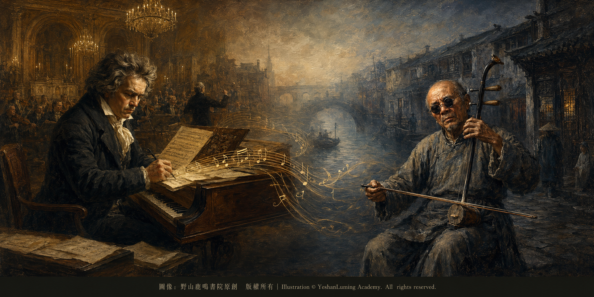
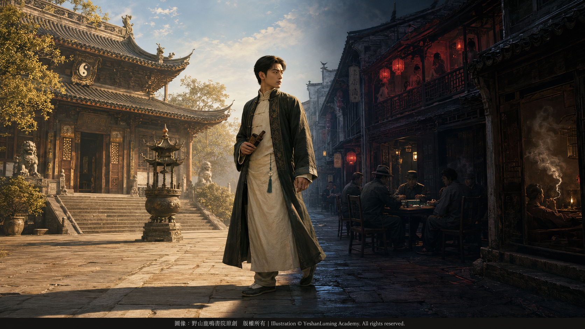

天才的墮落·華彥鈞對命運的報復與自我毀滅The Fall of a Genius · Hua Yanjun’s Revenge Against Fate and His Self-Destruction
China’s Beethoven · Blind Musician AbingThe Fall of a Genius · Hua Yanjun’s Revenge Against Fate and His Self-Destruction
China’s Beethoven · Blind Musician Abing天才的墮落·華彥鈞對命運的報復與自我毀滅
中國的貝多芬·瞎子阿炳
中國的貝多芬·瞎子阿炳（104）China’s Beethoven · Blind Musician Abing (104)
小小的華彥鈞，不知是出於遺傳，還是在師父——也是父親——華清和的愛護與嚴格訓練中，逐漸被啟發了音樂天性。他沒有辜負父親的希望，學習非常努力，進步也非常快。到了十五六歲時，他不但能夠熟練演奏各種樂器，在雷尊殿的道士中已經無人可比，有些方面甚至比父親還略勝一籌。
華彥鈞可以說繼承了父親的一切。他雖然自幼歷經苦難，卻還是出落成一個玉樹臨風的美少年，比年輕時的華清和更加引人注目，真可謂青出於藍而勝於藍。
華彥鈞開始跟隨父親參加法事。雖然年紀輕輕，他已經成為法事音樂演奏中的主力。英俊瀟灑的外表，加上出神入化的音樂才華，使他每次前往大戶人家做法事時，都像被眾星捧月一樣，成為年輕女人關注的焦點。
華清和看在眼裡，喜在心裡，卻也憂在心裡。他隱隱有些擔心，害怕兒子會走上自己當年的老路，一失足，留下終生的麻煩與痛苦。
不過，那時的華清和並沒有過分擔憂。他覺得只要自己還在，就可以為兒子保駕護航，及時提醒和約束他。因此，他心中更多的還是驕傲，為兒子的聰慧、英俊和音樂才華感到由衷的欣慰。
可是，天有不測風雲，人有旦夕禍福。
父子二人的這種好日子沒有維持多少年，華清和就不幸染上重病，臥床不起。雖然求遍無錫城裡的名醫，病情仍然沒有好轉，最後已是無藥可醫。
華清和最放心不下的，是這個年輕、優秀、才華橫溢，卻又單純如水、幾乎沒有任何社會經驗的兒子。
小小的華彥鈞，不知是出於遺傳，還是在師父——也是父親——華清和的愛護與嚴格訓練中，逐漸被啟發了音樂天性。他沒有辜負父親的希望，學習非常努力，進步也非常快。到了十五六歲時，他不但能夠熟練演奏各種樂器，在雷尊殿的道士中已經無人可比，有些方面甚至比父親還略勝一籌。
華彥鈞可以說繼承了父親的一切。他雖然自幼歷經苦難，卻還是出落成一個玉樹臨風的美少年，比年輕時的華清和更加引人注目，真可謂青出於藍而勝於藍。
華彥鈞開始跟隨父親參加法事。雖然年紀輕輕，他已經成為法事音樂演奏中的主力。英俊瀟灑的外表，加上出神入化的音樂才華，使他每次前往大戶人家做法事時，都像被眾星捧月一樣，成為年輕女人關注的焦點。
華清和看在眼裡，喜在心裡，卻也憂在心裡。他隱隱有些擔心，害怕兒子會走上自己當年的老路，一失足，留下終生的麻煩與痛苦。
不過，那時的華清和並沒有過分擔憂。他覺得只要自己還在，就可以為兒子保駕護航，及時提醒和約束他。因此，他心中更多的還是驕傲，為兒子的聰慧、英俊和音樂才華感到由衷的欣慰。
可是，天有不測風雲，人有旦夕禍福。
父子二人的這種好日子沒有維持多少年，華清和就不幸染上重病，臥床不起。雖然求遍無錫城裡的名醫，病情仍然沒有好轉，最後已是無藥可醫。
華清和最放心不下的，是這個年輕、優秀、才華橫溢，卻又單純如水、幾乎沒有任何社會經驗的兒子。
臨終之前，他終於向華彥鈞公開了兩人之間的真實關係：他們不只是師徒，更是父子。他又把雷尊殿當家道士的位置，以及管理道觀的責任，交給了兒子。
華清和滿臉淚痕，拉著兒子的手，苦口婆心地一再囑咐他：以後一定要小心謹慎做人，警惕壞人的引誘；一定要守住雷尊殿，依靠道觀的香火、田產以及外出做法事的收入，便可以保證一生衣食無憂。
年輕的華彥鈞完全沒有任何思想準備 ，這一切的變化來得太突然了。師父剛剛變成了父親，剛剛相認的父親卻又要永遠離他而去。這突如其來的真相和生離死別，使他震驚、茫然，不知應該如何面對。
然而，現實的變化來得太突然， 而華彥鈞卻太年輕。 作為徒弟的他， 一直生活在師父，父親羽翼下。 受保護， 受關照的他， 從來沒有想過， 他要在沒有父親的指導下， 繼承管理道觀那麼大的責任。
父親把雷尊殿交給了他。隨著地位上升和生活條件改善一起到來的，還有管理道觀、主持法事、以及如何維持雷尊殿香火旺盛的巨大責任。這一切來得太快，他手足無措，既沒有任何管理經驗，也沒有做好承擔重任的準備。
華清和去世後，阿炳接任了雷尊殿的當家道士，開始參與管理道觀及其收入。雷尊殿當時香火尚稱鼎盛，並有一定的田產和法事收入。只要他安分守住父親留下的基業，本來可以繼續過著衣食無憂的生活。
但是，實際情況卻恰恰相反。
地位的突然轉換、生活條件的優越，與他內心的迷茫和痛苦相比，好像都不算什麼。父親的死亡沒有使他立刻成熟起來，反而使他長期受到壓抑的內心突然失去了控制。
阿炳心中的痛苦，像一團烈火，開始瘋狂燃燒。
原來，這個世界並不像師父——也是父親——過去向他講述的那樣純潔，那樣美好。那個教導他遵守清規戒律、要求他謹慎做人、對他進行嚴格訓練的人，自己卻隱瞞了一個最重要的真相。
在阿炳看來，師父口頭上講的是一套，實際上做的卻是另外一套。
父親的隱瞞，使他二十多年來一直背負著私生子的屈辱，受盡謾罵、白眼和歧視，被周圍的社會所排斥。這些長年累月積壓在心中的傷痛，不是臨終前一句「我是你的親生父親」，就可以輕易化解的。
何況，他的母親吳阿芬，也因為這段不被禮教和道觀容許的關係，被迫離開人世。
單純、年輕、涉世未深的阿炳，開始對父親產生一種極其複雜的感情。
他當然知道父親愛他。父親撫養他、教導他、嚴格訓練他，把一身本領毫無保留地傳授給他，最後又把雷尊殿交到他的手中。可是，他也不能理解，更不能輕易原諒父親：既然你是我的親生父親，為什麼二十多年來始終不肯承認我？既然你一直教導我要誠實做人，為什麼你自己卻用一個巨大的謊言，掩蓋了我的全部身世？
愛、感激、怨恨、喪父之痛和身份崩塌，在他的內心糾纏在一起。他無法理解父親，也無法理解自己，更不知道今後應該以怎樣的身份活下去。

Click to enlarge
他對父親不能原諒，對道觀的清規戒律也產生了強烈反感。在他看來，所謂禮教、規矩、名聲和體面，不過是人們用來約束別人的工具。正是為了保全雷尊殿的面子，父親隱瞞了他的身世二十多年，也使他的母親付出了生命的代價。
我們當然無法證明，阿炳此後的每一次放縱，都是經過深思熟慮的報復。更可能的情況是：喪父的悲痛、身世揭開後的憤怒、長期受辱形成的逆反心理，以及突然失去嚴格管束後的放縱，共同摧毀了他原本的生活秩序。
壞人的引誘、金錢的誘惑和周圍的惡劣環境，都是推動他走向深淵的外因；而真正使他失去控制的，或許是內心那股無法排解的痛苦，以及逐漸形成的自我毀滅衝動。
他對輕易到手的地位和優渥生活，似乎沒有多大興趣。相反，他偏偏要反其道而行之。他要和過去的管教對著幹，要把道觀的清規戒律踩在腳下。因為在他看來，那些規矩全是虛偽的，全是用來欺騙和束縛人的。
過去，師父管著他，要求他刻苦練功、謹守戒律；現在，師父不在了，他成了雷尊殿的當家道士，手中有了一定的權力，也可以支配道觀的一部分收入。
那好，現在他阿炳有權了，也有錢了。他終於可以完全依照自己的性子生活，沒有人再能管束他，也沒有人再能逼迫他做一個循規蹈矩的道士。
於是，他開始不好好主持法事，對雷尊殿的香火是否興旺也漠不關心。他脫下道袍，換上時髦的綢緞衣服，整日與無錫當地的地痞流氓和幫會人物混在一起。
他把雷尊殿收來的香火錢、田產收入以及外出做法事賺來的錢，毫不吝惜地花在無錫崇安寺一帶的妓院和賭場裡。
這還不夠，他後來又迷上了吸食鴉片。
在煙館裡，他躺在煙榻上吞雲吐霧。毒品帶來的短暫快感，使他感到某種虛假的解脫與釋放，彷彿可以暫時忘記過去的屈辱、父親的死亡，以及那個突然揭開、又使他無法承受的身世真相。
當地一些不懷好意的人，看他年輕、手中有錢，又缺乏社會經驗，便故意接近他、引誘他，有人甚至設局騙他賭博。
阿炳也許不是完全不知道那些人心懷惡意，不是不明白那是一個專門為他設下的陷阱。但他仍然像著了魔一樣，一頭往裡跳，把大筆大筆的道觀收入砸在賭桌上，越賭越輸，越輸越賭。
我們不知道確切的真相，但是從他的身世和此後的行為推測，在某些瘋狂放縱的時刻，他內心深處或許曾經發出過這樣的呼喊：
「你們不是看重錢嗎？不是看重名聲， 看重面子嗎？那我就把這一切通通敗光，通通毀掉！」
他看似是在報復父親、報復道觀、報復禮教，也是在報復那個曾經歧視和侮辱他的社會。但是，他沒有意識到，當他用放縱去反抗規矩、用揮霍去報復父親的隱瞞時，真正被一步步毀掉的，其實是他自己。
阿炳這種不顧後果的自我放逐，持續了十多年。
最初，他或許只是出於逆反，想要掙脫父親留下的管束，報復過去遭受的不公；可是隨著時間推移，賭博、嫖娼和鴉片本身的誘惑與成癮性，逐漸控制了他的生活。
最初可能是他選擇了這種生活，後來卻是這種生活反過來控制了他。
父親留下的基業被一點點消耗，道觀的收入逐漸減少，他的身體也開始遭到全面反噬。雖然年紀尚輕，他的健康狀況卻已經大不如前。
大約在1928年前後，三十四五歲的阿炳因為長年流連風月場所，根據較為通行的說法，不幸染上了梅毒。
在那個尚無青黴素等有效抗生素的年代，梅毒一旦侵犯眼部或神經系統，便可能造成嚴重而不可逆的視力損害。阿炳的眼睛由發炎、流淚逐漸惡化，最後雙眼完全失明，眼前徹底陷入一片黑暗。
當阿炳雙目失明，道觀的收入和田產也已所剩無幾之後，他再也無力像從前那樣參加法事，也失去了管理雷尊殿的能力。
他失去了當家道士的位置，也失去了依靠道觀生活的條件，最後只能拄著竹竿，穿著破舊的衣服，走上無錫街頭，依靠賣藝謀生。
至此，阿炳完成了他人生中最慘烈的一場「自殘」。
他用鴉片、嫖賭和無休止的放縱，敗掉了父親留給他的基業，也砸碎了自己原本可以安穩度過的一生。
他看似報復了父親刻意隱瞞帶給他的痛苦， 報復了道教要他遵守的清規戒律，報復了道觀的體面，報復了那個曾經鄙視他的社會；然而，那些被他憎恨的人和規矩，未必真正受到傷害，真正受到傷害， 因而失去一切的，只有阿炳自己。
外部世界曾經傷害了他，而他又接過那把刀，繼續傷害自己。
當他雙目失明、一無所有，拄著竹竿走上無錫街頭賣藝謀生時，他的內心一定充滿恐懼、羞辱、悔恨和絕望。
但是，我們也可以推測，在這些痛苦之外，他的內心或許還曾產生過一種極其矛盾、甚至連他自己也無法解釋的解脫感， 他自由了。
他再也不用做那個見不得光的私生子徒弟，不用做那個必須遵守清規戒律的道士，也不用再做雷尊殿的當家道士，處處顧及身份、名聲和體面，逼迫自己像師父——也是父親——那樣生活。
現在的他，就是他。
他就是瞎子阿炳，一個流落街頭、靠賣藝謀生的盲人，一個失去地位、金錢和光明的人，一個一無所有，卻終於不再受到任何身份束縛的自由靈魂。
這當然不是一般人所理解的自由，而是一個人在付出最慘烈的代價之後，得到的悲涼而殘酷的「自由」。
至於阿炳當年究竟是如何想的，今天的人已經很難真正了解。我們沒有看到他留下任何的日記和自述，不能把後人的心理推測當成確定的歷史事實。
我們只能根據他的身世、遭遇和人生軌跡，嘗試理解他為什麼會從一個才華橫溢、前途無量的年輕道士，一個還算是興旺的道觀掌門人，一步步走向自我放逐和毀滅。
但是，有一點或許可以肯定：阿炳的墮落，不能簡單地全部歸罪於社會，也不能只歸罪於那些引誘他的壞人。
社會的歧視、父親的隱瞞和周圍人的引誘，在他心中埋下了痛苦和憤怒；而他長期受到壓抑後形成的逆反心理，又把這種痛苦變成了放縱和自我毀滅。
外因把他推向深淵，內因卻使他沒有回頭，甚至主動向深淵深處走去。
這正是阿炳人生悲劇中最殘酷的地方。
然而，這段從天堂墜落到地獄的刻骨經歷，從另外一個角度看，也成為命運對他的另一種磨練與淬煉。
失去父親、失去道觀、失去財富、失去光明，失去一切、最後流落街頭賣藝謀生，這些常人難以承受的苦難，最終都沉澱在他的生命和音樂之中，化作《二泉映月》裡那股任何正規音樂學院的教授都無法模仿、真正直擊靈魂的悲愴。
他的身體墜入了黑暗，他的音樂卻開始走向永恆。
（未完待續）
From an early age, Hua Yanjun’s innate gift for music gradually revealed itself—whether inherited by nature or awakened under the loving care and rigorous training of his master, who was also his father, Hua Qinghe.
He did not disappoint his father. He studied with extraordinary diligence and progressed with remarkable speed. By the age of fifteen or sixteen, he had already mastered a wide range of musical instruments. Among the Taoist priests of Leizun Temple, none could rival him; in certain respects, he had even begun to surpass his father.
Hua Yanjun could be said to have inherited everything from him. Although his childhood had been filled with hardship, he grew into a strikingly handsome young man, graceful and distinguished—more captivating even than Hua Qinghe had been in his youth. The pupil had truly surpassed the master; the son, the father.
Hua Yanjun began accompanying his father to perform religious ceremonies. Despite his youth, he had already become one of the principal musicians in their ritual ensembles. With his handsome appearance, confident bearing, and almost magical command of music, he became the center of attention whenever the Taoist priests performed ceremonies in the homes of wealthy families. Young women, in particular, could hardly take their eyes off him.
Hua Qinghe saw all this. He was delighted, and deeply proud—but beneath that pride lay an unspoken anxiety.
He feared that his son might follow the same path he himself had once taken: that one moment of weakness might leave behind a lifetime of trouble and suffering.
At the time, however, Hua Qinghe did not worry too much. As long as he was still alive, he believed he could watch over his son, warn him when necessary, and restrain him before he strayed too far. Pride therefore outweighed fear. He took heartfelt comfort in his son’s intelligence, handsome appearance, and exceptional musical gifts.
But storms can descend from a clear sky, and human fortune can change overnight.
The happy years shared by father and son did not last long. Hua Qinghe contracted a serious illness and became bedridden. Although they sought out every renowned physician in Wuxi, his condition did not improve. In the end, there was nothing more that medicine could do.
His greatest concern was the son he would soon leave behind—a young man of extraordinary talent and promise, yet innocent as clear water and almost entirely without experience of the world.
From an early age, Hua Yanjun’s innate gift for music gradually revealed itself—whether inherited by nature or awakened under the loving care and rigorous training of his master, who was also his father, Hua Qinghe.
He did not disappoint his father. He studied with extraordinary diligence and progressed with remarkable speed. By the age of fifteen or sixteen, he had already mastered a wide range of musical instruments. Among the Taoist priests of Leizun Temple, none could rival him; in certain respects, he had even begun to surpass his father.
Hua Yanjun could be said to have inherited everything from him. Although his childhood had been filled with hardship, he grew into a strikingly handsome young man, graceful and distinguished—more captivating even than Hua Qinghe had been in his youth. The pupil had truly surpassed the master; the son, the father.
Hua Yanjun began accompanying his father to perform religious ceremonies. Despite his youth, he had already become one of the principal musicians in their ritual ensembles. With his handsome appearance, confident bearing, and almost magical command of music, he became the center of attention whenever the Taoist priests performed ceremonies in the homes of wealthy families. Young women, in particular, could hardly take their eyes off him.
Hua Qinghe saw all this. He was delighted, and deeply proud—but beneath that pride lay an unspoken anxiety.
He feared that his son might follow the same path he himself had once taken: that one moment of weakness might leave behind a lifetime of trouble and suffering.
At the time, however, Hua Qinghe did not worry too much. As long as he was still alive, he believed he could watch over his son, warn him when necessary, and restrain him before he strayed too far. Pride therefore outweighed fear. He took heartfelt comfort in his son’s intelligence, handsome appearance, and exceptional musical gifts.
But storms can descend from a clear sky, and human fortune can change overnight.
The happy years shared by father and son did not last long. Hua Qinghe contracted a serious illness and became bedridden. Although they sought out every renowned physician in Wuxi, his condition did not improve. In the end, there was nothing more that medicine could do.
His greatest concern was the son he would soon leave behind—a young man of extraordinary talent and promise, yet innocent as clear water and almost entirely without experience of the world.
Before his death, Hua Qinghe finally revealed the truth about their relationship. They were not merely master and disciple. They were father and son.
He then entrusted Hua Yanjun with his position as the priest in charge of Leizun Temple, together with the responsibility of managing the Taoist sanctuary.
With tears covering his face, Hua Qinghe held his son’s hand and repeatedly urged him to remember his words. He must conduct himself cautiously. He must guard against the enticements of wicked people. Above all, he must preserve Leizun Temple. With the offerings of its worshippers, the income from its land, and the money earned by performing religious ceremonies, he would be able to live without fear of hunger or deprivation for the rest of his life.
The young Hua Yanjun was utterly unprepared. Everything had changed too suddenly.
His master had only just become his father—and the father he had only just recognized was about to leave him forever. The sudden revelation of his identity, followed immediately by the anguish of permanent separation, left him shocked and bewildered. He did not know how to face any of it.
Yet reality had changed before he had time to understand what was happening, and Hua Yanjun was still far too young. As a disciple, he had always lived beneath the protective wings of his master—his father. He had been sheltered, cared for, and guided. Never had he imagined that he would one day have to assume the immense responsibility of managing the temple without his father beside him.
His father left Leizun Temple in his hands. Along with his elevated position and improved living conditions came the enormous burdens of managing the temple, presiding over religious ceremonies, and sustaining the prosperity of its worship and offerings. Everything arrived too quickly. He was overwhelmed. He had no experience in management and was completely unprepared to carry such a responsibility.
After Hua Qinghe’s death, Abing succeeded him as the priest in charge of Leizun Temple and began participating in the management of the temple and its income. At the time, the temple still attracted a substantial number of worshippers and possessed a certain amount of farmland, as well as income from religious ceremonies. Had he quietly preserved the foundation his father had left him, he might have continued to enjoy a secure and comfortable life.
But what actually happened was precisely the opposite.
The sudden rise in his status and the comforts of his new circumstances seemed insignificant beside the confusion and suffering within him. His father’s death did not make him mature overnight. Instead, it released something that had long been suppressed, and his inner world suddenly spun out of control.
The pain in Abing’s heart began to burn like a raging fire.
The world, he now realized, was not as pure or as beautiful as his master—who was also his father—had always taught him to believe. The man who had demanded that he obey Taoist discipline, conduct himself cautiously, and submit to years of rigorous training had himself concealed the most important truth of all.
In Abing’s eyes, his master had preached one thing and practiced another.
Because of his father’s concealment, he had spent more than twenty years bearing the humiliation of being an illegitimate child. He had endured insults, hostile glances, discrimination, and rejection by the society around him. The wounds accumulated over all those years could not be healed by a single deathbed confession: “I am your biological father.”
Moreover, his mother, Wu Afen, had been forced to leave this world because of a relationship that neither conventional morality nor the Taoist temple could tolerate.
Young, innocent, and inexperienced in the ways of society, Abing began to harbor intensely complicated feelings toward his father.
Of course he knew that his father had loved him. Hua Qinghe had raised him, educated him, and trained him with uncompromising discipline. He had passed on everything he knew without reservation and, in the end, had placed Leizun Temple in his son’s hands.
Yet Abing could not understand him, much less forgive him so easily.
If you were my biological father, why did you refuse to acknowledge me for more than twenty years?
If you always taught me to live honestly, why did you use an enormous lie to conceal the truth of my entire existence?
Love, gratitude, resentment, grief over his father’s death, and the collapse of his identity became entangled within him. He could not understand his father. He could not understand himself. Nor did he know what identity he was supposed to live by from that moment onward.
Click to enlarge
Unable to forgive his father, he also developed a powerful aversion to the rules and disciplines of the temple. In his eyes, morality, propriety, reputation, and respectability were merely tools people used to restrain others. It was to preserve the honor of Leizun Temple that his father had hidden his identity for more than twenty years—and that his mother had paid with her life.
We cannot, of course, prove that every act of indulgence that followed was a carefully considered act of revenge. A more likely explanation is that grief over his father’s death, rage after the revelation of his parentage, a rebelliousness born of years of humiliation, and the sudden removal of strict restraint combined to destroy the order that had once governed his life.
The enticements of malicious people, the lure of money, and the corrupt environment around him were all external forces pushing him toward the abyss. But what truly caused him to lose control may have been the pain he could not release—and the growing impulse toward self-destruction.
He seemed to have little interest in the status and comfortable life that had come so easily into his hands. Instead, he deliberately turned in the opposite direction. He wanted to defy everything he had once been taught and trample the temple’s rules beneath his feet. To him, all those rules were hypocritical—nothing more than instruments of deception and confinement.
In the past, his master had controlled him, demanding that he practice relentlessly and observe every rule. Now his master was gone. Abing had become the priest in charge of Leizun Temple. He possessed a measure of authority and could control part of the temple’s income.
Very well, then. Now he, Abing, had power. He had money.
At last, he could live entirely according to his own desires. No one could restrain him anymore. No one could force him to behave like an obedient, rule-bound Taoist priest.
He began neglecting his duties at religious ceremonies and showed little concern for whether Leizun Temple continued to prosper. He discarded his Taoist robes, dressed himself in fashionable silk garments, and spent his days among local thugs, gang members, and disreputable figures in Wuxi.
He squandered the money donated by worshippers, the income from the temple’s farmland, and the fees earned from performing religious ceremonies in the brothels and gambling houses around Chong’an Temple in Wuxi.
Even that was not enough. He later became addicted to opium.
In the opium dens, he lay upon the smoking couch, inhaling and exhaling clouds of smoke. The fleeting pleasure produced by the drug offered him a false sense of release—as though, for a little while, he could forget the humiliations of the past, the death of his father, and the unbearable truth of his identity that had been revealed so suddenly.
Some ill-intentioned people in the area saw that he was young, had money at his disposal, and possessed little experience of society. They deliberately befriended and enticed him. Some even set traps to cheat him at gambling.
Perhaps Abing was not entirely unaware of their malicious intentions. Perhaps he understood that the trap had been prepared specifically for him. Yet he still plunged into it as though possessed, throwing large amounts of the temple’s income onto the gambling tables. The more he lost, the more he gambled; the more he gambled, the more he lost.
We do not know exactly what happened. But judging from his background and his later conduct, perhaps, in certain moments of frenzied self-indulgence, a cry like this arose from somewhere deep within him:
“Isn’t money what you value? Don’t you care about reputation and appearances? Then I will squander all of it. I will destroy everything!”
He appeared to be taking revenge upon his father, the temple, conventional morality, and the society that had once despised and humiliated him. But he failed to realize that when he used indulgence to rebel against discipline, and extravagance to avenge his father’s concealment, the person being destroyed, step by step, was himself.
Abing’s reckless self-exile continued for more than ten years.
At first, perhaps he was driven mainly by rebellion. He wanted to escape the restraints his father had left behind and retaliate against the injustice he had suffered. But as the years passed, gambling, prostitution, and opium exerted their own seductions and addictions, gradually taking control of his life.
At first, he may have chosen that life.
Later, that life chose for him.
The foundation his father had left behind was consumed little by little. The temple’s income steadily declined, and his body began to exact its terrible revenge. Although he was still relatively young, his health had already deteriorated dramatically.
Around 1928, when Abing was approximately thirty-four or thirty-five, he contracted syphilis—according to the more widely accepted account—as a result of his long years frequenting brothels.
In an age before penicillin and other effective antibiotics, syphilis could cause severe and irreversible damage to vision if it affected the eyes or nervous system. Abing’s eyes gradually deteriorated, beginning with inflammation and persistent watering. Eventually, he became completely blind, and everything before him sank into absolute darkness.
By the time Abing had lost his sight, little remained of the temple’s income or farmland. He could no longer participate in religious ceremonies as he once had, nor was he capable of managing Leizun Temple.
He lost his position as the priest in charge. He also lost the means to support himself through the temple. In the end, dressed in worn and tattered clothing and feeling his way forward with a bamboo cane, he took to the streets of Wuxi and survived by performing music for a living.
At this point, Abing had completed the most devastating act of self-mutilation in his life.
Through opium, prostitution, gambling, and endless dissipation, he had squandered the foundation his father had left him and shattered the stable life he might otherwise have enjoyed.
He appeared to have taken revenge upon his father for the pain caused by years of deliberate concealment. He appeared to have taken revenge upon the Taoist disciplines he had been expected to obey, upon the respectability of the temple, and upon the society that had once despised him.
Yet the people and rules he hated may not have been truly harmed at all.
The only person who was truly wounded—and who consequently lost everything—was Abing himself.
The outside world had once wounded him. Then he took the knife from its hands and continued cutting into himself.
When he became blind and destitute and walked onto the streets of Wuxi with a bamboo cane to earn his living through music, his heart must have been filled with fear, humiliation, regret, and despair.
And yet, beyond all this suffering, we may also imagine that he experienced an intensely contradictory sense of release—one that perhaps even he could not explain.
He was free.
He no longer had to be the illegitimate disciple whose identity could never be brought into the light. He no longer had to be the Taoist priest compelled to obey strict religious discipline. Nor did he have to remain the priest in charge of Leizun Temple, constantly preserving his status, reputation, and respectability, forcing himself to live as his master—who was also his father—had lived.
Now, he was simply himself.
He was Blind Abing: a blind man cast onto the streets and surviving through music; a man who had lost his position, his money, and his sight; a soul who possessed nothing, yet was finally bound by no identity at all.
This was certainly not freedom as ordinary people understand it. It was a desolate and brutal kind of “freedom,” purchased only after a man had paid the most terrible price imaginable.
As for what Abing truly thought at the time, it is now almost impossible for us to know. We have no diaries or personal accounts left by him. We cannot treat later psychological interpretations as established historical fact.
We can only look at his origins, his suffering, and the course of his life, and attempt to understand why a brilliant young Taoist priest with seemingly limitless promise—a man who had become the head of a still-prosperous temple—gradually descended into self-exile and destruction.
But one point can perhaps be stated with some confidence: Abing’s fall cannot simply be blamed entirely upon society, nor can all responsibility be placed upon the wicked people who enticed him.
Society’s discrimination, his father’s concealment, and the temptations surrounding him planted pain and anger in his heart. But the rebelliousness formed through years of suppression transformed that pain into dissipation and self-destruction.
External forces pushed him toward the abyss. Internal forces kept him from turning back—and may even have driven him deliberately deeper into it.
This is the cruelest aspect of the tragedy of Abing’s life.
And yet, seen from another perspective, this searing descent from heaven into hell also became another form of ordeal—a tempering imposed upon him by fate.
He lost his father.
He lost the temple.
He lost his wealth.
He lost his sight.
He lost everything and, in the end, was cast onto the streets to survive by performing music.
All these sufferings—burdens that an ordinary person could scarcely endure—eventually settled into the deepest layers of his life and music. They became the heartbreaking sorrow of The Moon Reflected on the Second Spring: a sorrow that no professor from any formal conservatory could ever imitate, a sorrow that reaches directly into the human soul.
His body descended into darkness.
But his music began its journey toward eternity.
(To be continued)